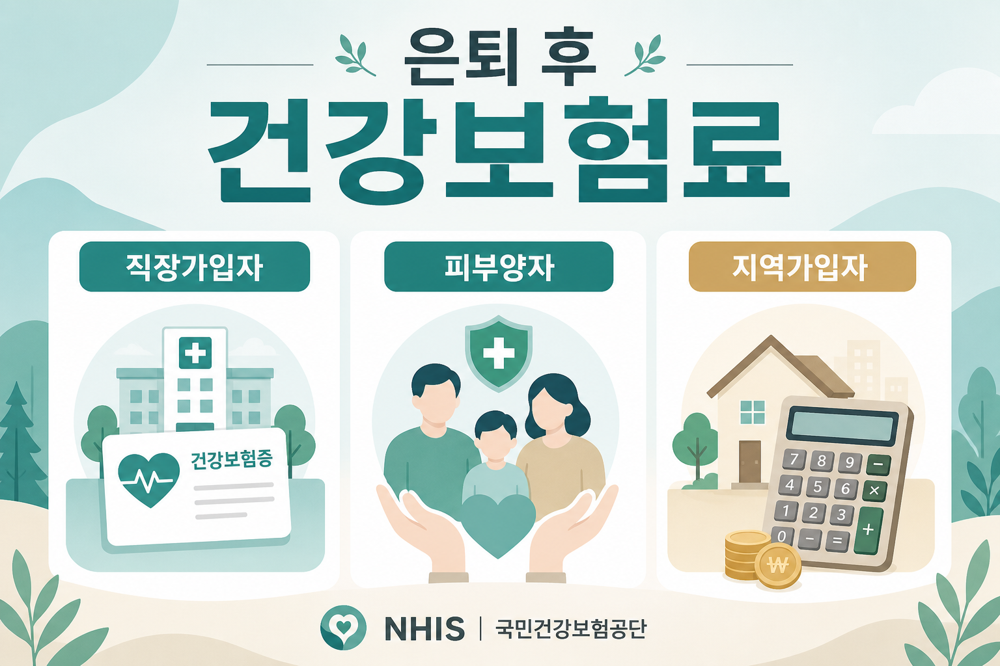

은퇴하면 건강보험료 폭탄? 지역가입자 전환·피부양자 자격 총정리 (2026)
직장 절반 부담이 사라지고, 재산까지 보험료에 들어가는 순간을 초보 눈높이로

은퇴가 보이면 월급 이야기 다음에 꼭 따라오는 질문이 있습니다. “직장 다닐 땐 회사가 건강보험료 절반을 내줬는데, 그만두면 어떻게 되지?” 생산관리 월급쟁이인 저도 선배들 모임에서 이 한숨을 자주 듣습니다. 오늘은 확정된 기준만 가지고, 직장가입자·지역가입자·피부양자·임의계속가입자를 초보 눈높이로 풀어 보겠습니다.
먼저 읽어주세요
본 글은 정보 제공이며 보험료 절감 자문·상품 권유가 아닙니다. 개인별 소득·재산·가족관계가 다르면 결과가 달라집니다. 정확한 기준·계산은 국민건강보험공단(nhis.or.kr) 확인이 필수입니다. 2026년 11월 피부양자 재판정 강화는 “예정·강화되는 방향”으로만 적으며, 구체 시행 세부는 공단 안내를 따르세요. 결정은 본인 상황과 전문가 상담 후에 하세요.
- 가입 유형 네 가지를 표로 비교합니다.
- 2026년 건강보험료율 7.19%(본인 부담 3.595%), 하한액 월 20,160원을 공식 기준으로 통일합니다.
- 피부양자 소득 연 2,000만원·재산 과표 5.4억 등 확정 사실만 사용합니다.
1. 은퇴 앞두고 누구나 하는 고민 — 회사가 내주던 절반이 사라진다
직장에 다닐 때는 건강보험료가 급여명세서에 한 줄로 찍힙니다. 체감이 작아 보이는 이유는, 본인이 내는 몫이 전체의 절반이기 때문입니다. 2026년 건강보험료율은 7.19%이고, 직장가입자 본인 부담률은 그 절반인 3.595%입니다. 나머지 3.595%는 회사가 부담합니다. 장기요양보험료율도 별도로 부과됩니다. 장기요양 요율 숫자는 이 글에서 지어내지 않습니다. 정확한 기준·계산은 국민건강보험공단(nhis.or.kr) 확인이 필수입니다.
그만두는 순간, 그 “회사 절반”이 사라집니다. 배우자의 피부양자로 들어갈 수 있으면 보험료 0원이 될 수 있고, 자격에 안 맞으면 지역가입자로 바뀌어 소득뿐 아니라 재산까지 보고 보험료가 매겨집니다. 그래서 “은퇴하면 건보료 폭탄”이라는 말이 나옵니다. 폭탄인지 아닌지는 사람마다 다릅니다. 무조건 오른다고 단정하지 않겠습니다.
국민연금을 언제 받을지와도 맞물립니다. 공적연금은 건보 소득에 일부 반영되기 때문입니다. 수령 시기 자체는 국민연금 조기수령 vs 연기수령 글에서 비율만 참고하시고, 오늘은 건보 쪽 자격·산정만 보겠습니다.
2. 건강보험 가입 4유형 — 표로 한눈에
헷갈리는 이유는 이름이 넷이나 되기 때문입니다. 직장가입자, 지역가입자, 피부양자, 임의계속가입자. 역할만 기억하면 됩니다. 누가 내느냐, 무엇을 보느냐입니다.
| 유형 | 보험료 부담 | 산정 기준 | 한 줄 기억 |
|---|---|---|---|
| 직장가입자 | 회사 50% · 본인 50% | 보수월액 | 일할 때. 본인 부담 3.595%(2026) |
| 지역가입자 | 본인 100% | 소득 + 재산 | 직장·피부양자에 안 들어갈 때 |
| 피부양자 | 0원 | 자격 요건(가족·소득·재산·부양) | 직장가입자에게 얹히는 자격 |
| 임의계속가입자 | 기존 직장보험료 수준 유지 신청 | 퇴직 전 직장 기준(신청 시) | 퇴직 후 최대 36개월 |
※ 정확한 기준·계산은 국민건강보험공단(nhis.or.kr) 확인 필수. 임의계속은 신청해야 하며 요건이 있습니다.
임의계속가입자는 “은퇴 후에도 직장 다닐 때처럼 내겠다”고 신청하는 제도입니다. 퇴직 후 최대 36개월, 기존 직장보험료 수준을 유지할 수 있습니다. 지역가입자로 바뀌면 재산 때문에 더 나올 수 있는 분에게 검토 후보가 됩니다. 무조건 유리하다고 말하지 않습니다. 신청 요건·기한은 공단에 확인하세요.
2026년 보험료 하한액은 직장·지역 공통으로 월 20,160원입니다. 계산이 이보다 낮아도 이 금액이 바닥입니다. 정확한 기준·계산은 국민건강보험공단(nhis.or.kr) 확인이 필수입니다.
3. 왜 은퇴하면 보험료가 오르나
이유는 크게 두 겹입니다. 첫째, 회사가 내주던 50%가 사라집니다. 같은 7.19%라도 직장은 본인이 3.595%만 냅니다. 지역은 본인이 100%입니다.
둘째, 지역가입자는 소득만이 아니라 재산까지 봅니다. 집은 “살아가는 곳”인데, 건보에서는 재산점수로 환산될 수 있습니다. 직장 다닐 때는 보수월액 중심이라 집값이 고지서에 바로 안 보이던 느낌이, 지역으로 가면 갑자기 집이 보험료로 보이는 겁니다.
직장 — 보수 중심
보수월액에 요율을 곱합니다. 회사와 본인이 반씩. 재산은 이 구조의 주인공이 아닙니다.
지역 — 소득+재산
소득보험료에 재산보험료를 더합니다. 본인 100%. 집이 있으면 체감이 확 달라질 수 있습니다.
그래서 은퇴 설계는 “연금을 얼마 받느냐”만으로 끝나지 않습니다. 피부양자로 남을 수 있는지, 지역으로 가면 재산이 얼마나 잡히는지를 같이 봐야 합니다. 같은 월급쟁이 선배 중에는 “연금을 늘리는 계산만 하다가, 건보 고지서를 보고 나서야 자격 이야기를 시작했다”는 분이 있습니다. 순서를 바꾸면 덜 당황합니다. 자격 조회를 먼저 하고, 그다음 연금액·재산 과표를 나란히 적어 보세요. 집을 담보로 현금을 만드는 주택연금과는 별개 제도입니다. 집과 노후 현금이 궁금하시면 주택연금 조건·수령액 글을 정보로만 참고하세요.
4. 피부양자 자격 4대 요건 — 안전/위험/탈락
피부양자가 되면 보험료는 0원입니다. 대신 네 가지를 동시에 맞춰야 합니다. 하나라도 빠지면 탈락입니다. 정확한 기준·계산은 국민건강보험공단(nhis.or.kr) 확인이 필수입니다.
-
① 가족관계
배우자, 직계존비속, 형제자매입니다. “친구네 집에 얹혀산다”는 해당하지 않습니다. -
② 소득 연 2,000만원 이하
피부양자 소득 한선은 연 2,000만원입니다. 사업자등록이 있으면 사업소득이 1원이라도 탈락합니다. 사업자등록이 없으면 사업소득 500만원 이하입니다. 이 두 문장은 자주 섞이니, 등록 여부부터 확인하세요. -
③ 재산 과세표준 5.4억 이하
5.4억 이하면 재산 쪽은 통과 구간에 가깝습니다. 5.4억~9억은 소득 1,000만원 이하일 때 유지됩니다. 9억을 넘으면 소득과 무관하게 탈락입니다. -
④ 실제 부양관계
서류상 가족만으로 부족할 수 있습니다. 실제로 부양하는지가 요건에 들어갑니다. 세부 증빙은 공단 안내를 따르세요.
| 재산 과세표준 | 소득 조건(함께 볼 것) | 구간 감각 |
|---|---|---|
| 5.4억 이하 | 연 2,000만원 이하 등 소득 요건 충족 시 | 상대적으로 안전 구간(다른 요건도 충족해야 함) |
| 5.4억 초과 ~ 9억 이하 | 소득 1,000만원 이하일 때 유지 | 위험 구간 — 소득이 조금만 커도 탈락 |
| 9억 초과 | 소득 무관 | 탈락 |
※ 과세표준은 시세와 다릅니다. 정확한 기준·계산은 국민건강보험공단(nhis.or.kr) 확인 필수.
은퇴 후 흔한 흐름은 이렇습니다. 퇴직 → 배우자·자녀 직장가입자의 피부양자 등록을 시도 → 소득이나 재산이 기준을 넘으면 지역가입자로 전환 → 보험료 발생. 공적연금 소득이 커지면 피부양자 탈락 위험이 커집니다. 국민연금을 언제 받느냐가 건보 자격에도 영향을 줄 수 있다는 뜻입니다.
2026년 11월에는 피부양자 재판정이 강화되는 방향이 예정되어 있습니다. 이 글에서는 구체 시행 세부를 단정하지 않습니다. “올해는 괜찮았는데 내년에 다시 본다”는 감각으로, 공단 안내를 꼭 확인하세요.
5. 피부양자 탈락하면? 지역가입자 보험료 산정
지역가입자 보험료는 크게 두 덩어리입니다. 소득보험료와 재산보험료입니다. 소득보험료는 소득월액에 2026년 요율 7.19%를 곱합니다. 재산보험료는 재산점수에 점수당 211.5원을 곱합니다. 재산은 기본공제 1억원을 차감한 뒤 점수를 산정합니다. 소득은 전년도 국세청 신고 기준, 재산은 당해 6월 1일 재산세 과세표준 기준입니다. 정확한 기준·계산은 국민건강보험공단(nhis.or.kr) 확인이 필수입니다.
어떤 소득이 들어가느냐가 핵심입니다. 사업소득·금융소득·기타소득은 100% 반영됩니다. 근로소득과 연금소득은 50%만 반영됩니다. 금융소득은 이자·배당을 합산해 연 1,000만원을 넘으면 전액 반영됩니다. 공적연금(국민연금·공무원연금 등)만 반영되고, 연금저축·개인연금·퇴직연금은 반영되지 않습니다.
| 소득 종류 | 반영 비율 | 메모 |
|---|---|---|
| 사업·금융·기타 | 100% | 금융은 이자·배당 합산 연 1,000만원 초과 시 전액 |
| 근로·연금 | 50% | 공적연금만 해당. 연금저축·개인연금·퇴직연금은 미반영 |
계산 구조 예시 — 예시일 뿐, 내 고지서가 아닙니다
이해를 돕는 가상 예시입니다. 재산점수는 공단 환산표가 따로 있어 이 글에서 점수를 지어내지 않습니다.
소득월액이 200만 원이라고 가정하면, 소득보험료는 200만 원 × 7.19% = 143,800원입니다. 여기에 재산보험료(재산점수 × 211.5원)가 더해집니다. 재산은 1억원 기본공제 후 점수로 바뀝니다. 하한액 월 20,160원보다 낮게 나와도 하한이 적용됩니다. 장기요양보험료는 별도입니다. 재산점수를 여기서 임의로 곱하지 않는 이유는, 점수 환산표가 공단 기준이기 때문입니다. 소득보험료 구조만 보여 드리고, 재산 쪽은 고지·조회 결과를 따르세요. 이 숫자는 예시이며, 정확한 기준·계산은 국민건강보험공단(nhis.or.kr) 확인이 필수입니다.
직장 때와 비교하면 느낌이 옵니다. 같은 200만 원 보수월액이라면 직장 본인 부담은 200만 원 × 3.595% = 71,900원입니다. 지역은 소득보험료만 봐도 7.19%라 두 배 구조이고, 재산이 붙으면 더 늘어날 수 있습니다. 이것도 가정이니, 내 보수·소득월액을 공단에서 조회하세요.
6. 은퇴 후 특히 조심할 함정
첫 함정은 공적연금입니다. 국민연금·공무원연금 등은 건보 소득에 들어가고, 반영 비율은 50%입니다. “연금을 받기 시작했는데 피부양자에서 떨어졌다”는 이야기가 여기서 나옵니다. 수령액을 키우는 선택과 피부양자 유지가 동시에 안 맞을 수 있습니다. 어느 쪽이 맞다고 찍지 않겠습니다. 두 효과를 같이 보라는 안내입니다.
둘째는 금융소득 1,000만원 룰입니다. 이자·배당을 합쳐 연 1,000만원을 넘으면 금융소득이 전액 반영됩니다. “조금 넘었을 뿐인데”가 자격·보험료를 한 번에 바꿀 수 있습니다.
셋째는 “분리과세라서 괜찮다”는 오해입니다. 세금 신고에서 분리과세로 처리되는 것과, 건보가 소득을 어떻게 보는지가 항상 같지 않습니다. 세금 상담에서 들은 말을 건보 자격에 그대로 옮기지 마세요. 건보는 공단 기준입니다. 정확한 기준·계산은 국민건강보험공단(nhis.or.kr) 확인이 필수입니다.
과표와 시세를 혼동하는 것도 흔한 실수입니다. 이웃이 “우리 집 시세가 얼마”라고 말해도, 피부양자 재산 요건은 재산세 과세표준입니다. 5.4억·9억 구간을 시세로 대입하면 자격 판단이 어긋납니다. 고지서에 적힌 과표를 기준으로, 공단 조회와 맞춰 보세요.
넷째는 사업자등록입니다. 등록이 있으면 사업소득 1원도 피부양자 탈락입니다. “거의 안 벌었는데”가 통하지 않을 수 있습니다. 등록 없이 사업소득 500만원 이하인 경우와 완전히 다른 문장입니다.
여유 자금의 세제 틀이 궁금하시면 ISA 세제개편 글을 현행·개편안 구분해서 읽어 보세요. ISA와 건보는 다른 제도입니다. 하나로 섞어 결론 내지 마세요.
7. 미리 대비하는 법 — 정보일 뿐, 권유가 아닙니다
아래는 검토 목록입니다. “이렇게 하세요”가 아닙니다. 특정 금융상품·투자를 권하지 않습니다.
-
임의계속가입 신청 검토
퇴직 후 최대 36개월, 기존 직장보험료 수준을 유지하는 신청이 가능합니다. 지역으로 가면 재산보험료가 부담될 것 같을 때 후보가 됩니다. 기한·자격은 공단에 물어보세요. 신청하지 않으면 자동으로 유지되지 않습니다. “나중에 생각해도 되겠지”가 기한을 놓치는 경우가 있습니다. -
공적연금 수령 시기 조절 검토
연금을 받기 시작하면 건보 소득에 50%가 반영됩니다. 피부양자 유지가 중요한 해와, 연금 현금이 급한 해를 나눠 보는 분이 있습니다. 조기·연기는 국민연금 비교 글의 비율(조기 6%/년, 연기 7.2%/년)을 참고하되, 건보 효과까지 공단에 확인하세요. -
금융소득 연 1,000만원 이하 관리 검토
이자·배당 합산이 기준입니다. 넘으면 전액 반영입니다. “관리”는 상품 추천이 아니라, 합산 금액을 미리 조회하라는 뜻입니다. -
재산 과표 확인
시세 9억과 과표 9억은 다릅니다. 피부양자는 과세표준 5.4억·9억 구간을 봅니다. 납세고지·위택스 등에서 과표를 확인하고, 공단 자격 조회와 맞춰 보세요.
세후 현금흐름을 먼저 적어 두면 대화가 구체가 됩니다. 아직 월급이 있다면 연봉·실수령액 계산기로 감을 잡아 보세요. 건보료 고지 금액 자체는 계산하지 않습니다. 공단 조회가 정본입니다.
8. 자주 묻는 질문
Q. 퇴직하면 자동으로 피부양자가 되나요?
아닙니다. 가족관계·소득·재산·실제 부양을 맞춰 등록·인정받아야 합니다.
자동이 아닙니다. 정확한 기준·계산은 국민건강보험공단(nhis.or.kr) 확인이 필수입니다.
Q. 국민연금을 받으면 무조건 피부양자에서 떨어지나요?
무조건은 아닙니다. 공적연금은 50% 반영되고, 연 2,000만원 한선·재산 구간과 함께 봅니다.
연금액이 커질수록 탈락 위험은 커집니다. 개인 조회가 필요합니다.
Q. 개인연금·퇴직연금도 건보 소득에 들어가나요?
이 글의 확정 사실 기준으로는 공적연금만 반영되고,
연금저축·개인연금·퇴직연금은 반영되지 않습니다.
최신 여부는 공단에 한 번 더 확인하세요.
Q. 임의계속가입을 신청하면 36개월 뒤엔요?
최대 36개월입니다. 이후에는 그때의 자격(직장·지역·피부양자)으로 다시 정리됩니다.
연장을 무한히 한다고 적지 않습니다. 만료 전 공단에 다음 단계를 문의하세요.
Q. 2026년 11월 재판정이 뭔가요?
피부양자 자격을 다시 보는 방향이 강화될 예정으로 알려져 있습니다.
구체 시행 세부는 이 글에서 단정하지 않습니다. 공단 공지·상담이 기준입니다.
9. 마무리 — 고지서는 자격에서 시작합니다
정리하면 이렇습니다. 2026년 건강보험료율은 7.19%, 직장 본인 부담은 3.595%입니다. 하한액은 월 20,160원입니다. 지역은 소득월액×7.19%에 재산점수×211.5원을 더하고, 재산은 1억원 기본공제 후 점수입니다. 피부양자는 가족·소득 연 2,000만원·재산 과표 5.4억(중간·초과 구간 있음)·실제 부양입니다. 사업자등록이 있으면 사업소득 1원도 탈락, 없으면 사업소득 500만원 이하입니다. 금융소득은 이자·배당 합산 연 1,000만원 초과 시 전액입니다. 공적연금은 50% 반영, 개인·퇴직·연금저축은 미반영입니다. 임의계속은 퇴직 후 최대 36개월 신청 가능입니다.
“폭탄”인지는 제가 찍어 드리지 않습니다. 자격부터 조회하고, 지역 예상액은 공단에서 확인하세요. 오늘 표가 가족 대화의 출발점이 되길 바랍니다. 배우자·자녀와 “우리 과표가 어느 칸인지, 연금은 언제부터인지”를 한 장에 적어 보시면 공단 창구 질문이 짧아집니다. 숫자는 공단이 정본입니다.
📎 출처·참고
- 국민건강보험공단(nhis.or.kr) 직장·지역·피부양자·임의계속가입 안내
- 2026년 건강보험료율 7.19%(직장 본인 3.595%), 하한액 월 20,160원
- 지역: 소득월액×7.19% + 재산점수×211.5원, 재산 기본공제 1억원
- 피부양자 소득 연 2,000만원 · 재산 과표 5.4억(5.4억~9억은 소득 1,000만원 이하, 9억 초과 탈락)
- 국민연금 조기·연기 · 주택연금 · ISA

본 글은 정보 제공 목적이며 개인별 상황이 다르니 정확한 계산·상담은 국민건강보험공단(nhis.or.kr) 및 전문가에게 확인하세요. 재무·법률·보험료 절감 자문이 아닙니다. 예시 금액은 이해를 돕기 위한 가정이며, 2026년 11월 재판정 강화는 예정·방향이므로 구체 시행 세부는 공단 안내를 따르시기 바랍니다. 결정은 본인 상황·전문가 상담 후 하시기 바랍니다.